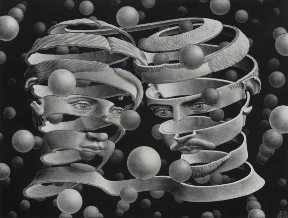

MC Escher
MC Escher was a Dutch graphic artist who made woodcuts, lithographs, and mezzotints,
many of which were inspired by mathematics. Despite wide popular interest,
for most of his life Escher was neglected in the art world, even in his native
Netherlands. He was 70 before a retrospective exhibition was held. In the late
twentieth century, he became more widely appreciated, and in the twenty-first century
he has been celebrated in exhibitions around the world.
Salvador Dalí was a Spanish surrealist artist renowned for his technical skill,
precise draftsmanship, and the striking and bizarre images in his work.
Dalí's artistic repertoire included painting, sculpture, film, graphic arts,
animation, fashion, and photography, at times in collaboration with other artists.
| Artists | Style | Country of Origin |
|---|---|---|
| Salvador Dalí | Surrealism | Spain |
| Claude Monet | Impressionism | France |
| François Rodin | Sculptor | France |
| MC Escher | Symmethry, Perspective | Netherlands |